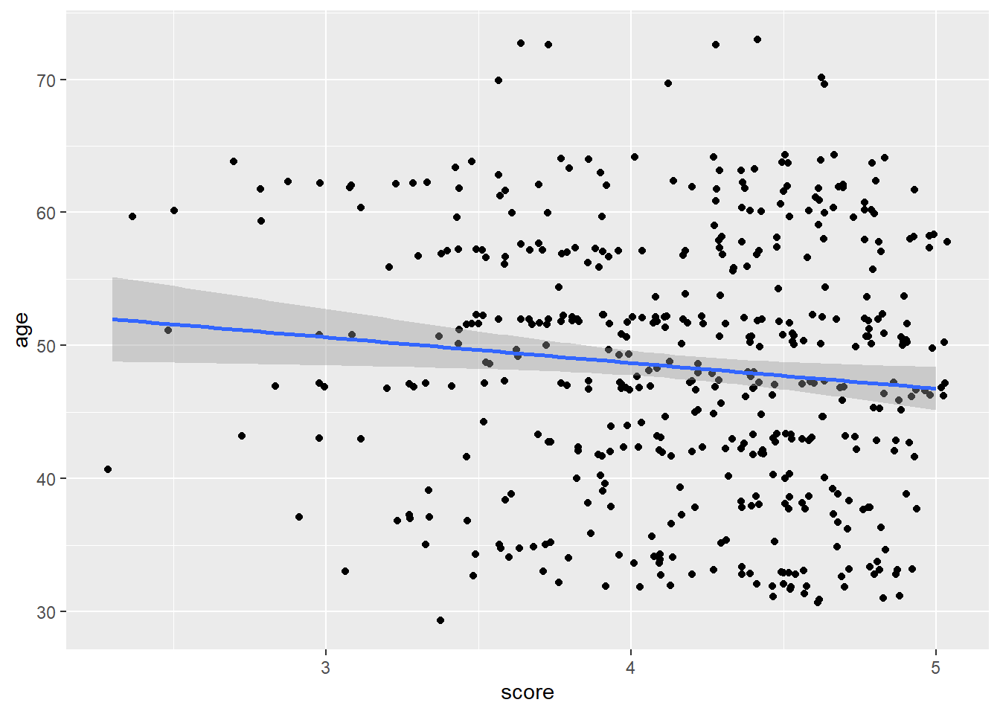

library(dplyr)
library(ggplot2)
#library(gapminder)
library(moderndive)
library(broom)
library(skimr)Regression
Load library packages
Data
data are from the moderndive package. Modern dive by Ismay and Kim.
evals_ch5 <- evals %>%
select(ID, score, bty_avg, age)
evals# A tibble: 463 × 14
ID prof_ID score age bty_avg gender ethnicity language rank pic_o…¹
<int> <int> <dbl> <int> <dbl> <fct> <fct> <fct> <fct> <fct>
1 1 1 4.7 36 5 female minority english tenur… not fo…
2 2 1 4.1 36 5 female minority english tenur… not fo…
3 3 1 3.9 36 5 female minority english tenur… not fo…
4 4 1 4.8 36 5 female minority english tenur… not fo…
5 5 2 4.6 59 3 male not minority english tenur… not fo…
6 6 2 4.3 59 3 male not minority english tenur… not fo…
7 7 2 2.8 59 3 male not minority english tenur… not fo…
8 8 3 4.1 51 3.33 male not minority english tenur… not fo…
9 9 3 3.4 51 3.33 male not minority english tenur… not fo…
10 10 4 4.5 40 3.17 female not minority english tenur… not fo…
# … with 453 more rows, 4 more variables: pic_color <fct>, cls_did_eval <int>,
# cls_students <int>, cls_level <fct>, and abbreviated variable name
# ¹pic_outfitevals_ch5# A tibble: 463 × 4
ID score bty_avg age
<int> <dbl> <dbl> <int>
1 1 4.7 5 36
2 2 4.1 5 36
3 3 3.9 5 36
4 4 4.8 5 36
5 5 4.6 3 59
6 6 4.3 3 59
7 7 2.8 3 59
8 8 4.1 3.33 51
9 9 3.4 3.33 51
10 10 4.5 3.17 40
# … with 453 more rowsevals_ch5 %>%
summary() ID score bty_avg age
Min. : 1.0 Min. :2.300 Min. :1.667 Min. :29.00
1st Qu.:116.5 1st Qu.:3.800 1st Qu.:3.167 1st Qu.:42.00
Median :232.0 Median :4.300 Median :4.333 Median :48.00
Mean :232.0 Mean :4.175 Mean :4.418 Mean :48.37
3rd Qu.:347.5 3rd Qu.:4.600 3rd Qu.:5.500 3rd Qu.:57.00
Max. :463.0 Max. :5.000 Max. :8.167 Max. :73.00 skimr::skim(evals_ch5)| Name | evals_ch5 |
| Number of rows | 463 |
| Number of columns | 4 |
| _______________________ | |
| Column type frequency: | |
| numeric | 4 |
| ________________________ | |
| Group variables | None |
Variable type: numeric
| skim_variable | n_missing | complete_rate | mean | sd | p0 | p25 | p50 | p75 | p100 | hist |
|---|---|---|---|---|---|---|---|---|---|---|
| ID | 0 | 1 | 232.00 | 133.80 | 1.00 | 116.50 | 232.00 | 347.5 | 463.00 | ▇▇▇▇▇ |
| score | 0 | 1 | 4.17 | 0.54 | 2.30 | 3.80 | 4.30 | 4.6 | 5.00 | ▁▁▅▇▇ |
| bty_avg | 0 | 1 | 4.42 | 1.53 | 1.67 | 3.17 | 4.33 | 5.5 | 8.17 | ▃▇▇▃▂ |
| age | 0 | 1 | 48.37 | 9.80 | 29.00 | 42.00 | 48.00 | 57.0 | 73.00 | ▅▆▇▆▁ |
Correlation
starwars %>%
filter(mass < 500) %>%
summarise(cor(mass, height))# A tibble: 1 × 1
`cor(mass, height)`
<dbl>
1 0.761weak correlation
evals_ch5 %>%
ggplot(aes(score, age)) +
geom_jitter() +
geom_smooth(method = lm)`geom_smooth()` using formula = 'y ~ x'
Linear model
For every increase of 1 unit increase in bty_avg, there is an associated increase of, on average, 0.067 units of score. from ModenDive
# Fit regression model:
score_model <- lm(score ~ bty_avg, data = evals_ch5)
score_model
Call:
lm(formula = score ~ bty_avg, data = evals_ch5)
Coefficients:
(Intercept) bty_avg
3.88034 0.06664 summary(score_model)
Call:
lm(formula = score ~ bty_avg, data = evals_ch5)
Residuals:
Min 1Q Median 3Q Max
-1.9246 -0.3690 0.1420 0.3977 0.9309
Coefficients:
Estimate Std. Error t value Pr(>|t|)
(Intercept) 3.88034 0.07614 50.96 < 2e-16 ***
bty_avg 0.06664 0.01629 4.09 5.08e-05 ***
---
Signif. codes: 0 '***' 0.001 '**' 0.01 '*' 0.05 '.' 0.1 ' ' 1
Residual standard error: 0.5348 on 461 degrees of freedom
Multiple R-squared: 0.03502, Adjusted R-squared: 0.03293
F-statistic: 16.73 on 1 and 461 DF, p-value: 5.083e-05the tidy way
broom
tidy the model fit with broom::tidy()
broom::tidy(score_model)# A tibble: 2 × 5
term estimate std.error statistic p.value
<chr> <dbl> <dbl> <dbl> <dbl>
1 (Intercept) 3.88 0.0761 51.0 1.56e-191
2 bty_avg 0.0666 0.0163 4.09 5.08e- 5get evaluative measure into a data frame
broom::glance(score_model)# A tibble: 1 × 12
r.squ…¹ adj.r…² sigma stati…³ p.value df logLik AIC BIC devia…⁴ df.re…⁵
<dbl> <dbl> <dbl> <dbl> <dbl> <dbl> <dbl> <dbl> <dbl> <dbl> <int>
1 0.0350 0.0329 0.535 16.7 5.08e-5 1 -366. 738. 751. 132. 461
# … with 1 more variable: nobs <int>, and abbreviated variable names
# ¹r.squared, ²adj.r.squared, ³statistic, ⁴deviance, ⁵df.residualMore model data
broom::augment(score_model)# A tibble: 463 × 8
score bty_avg .fitted .resid .hat .sigma .cooksd .std.resid
<dbl> <dbl> <dbl> <dbl> <dbl> <dbl> <dbl> <dbl>
1 4.7 5 4.21 0.486 0.00247 0.535 0.00103 0.911
2 4.1 5 4.21 -0.114 0.00247 0.535 0.0000560 -0.213
3 3.9 5 4.21 -0.314 0.00247 0.535 0.000427 -0.587
4 4.8 5 4.21 0.586 0.00247 0.535 0.00149 1.10
5 4.6 3 4.08 0.520 0.00403 0.535 0.00192 0.974
6 4.3 3 4.08 0.220 0.00403 0.535 0.000343 0.412
7 2.8 3 4.08 -1.28 0.00403 0.532 0.0116 -2.40
8 4.1 3.33 4.10 -0.00244 0.00325 0.535 0.0000000340 -0.00457
9 3.4 3.33 4.10 -0.702 0.00325 0.534 0.00282 -1.32
10 4.5 3.17 4.09 0.409 0.00361 0.535 0.00106 0.765
# … with 453 more rows